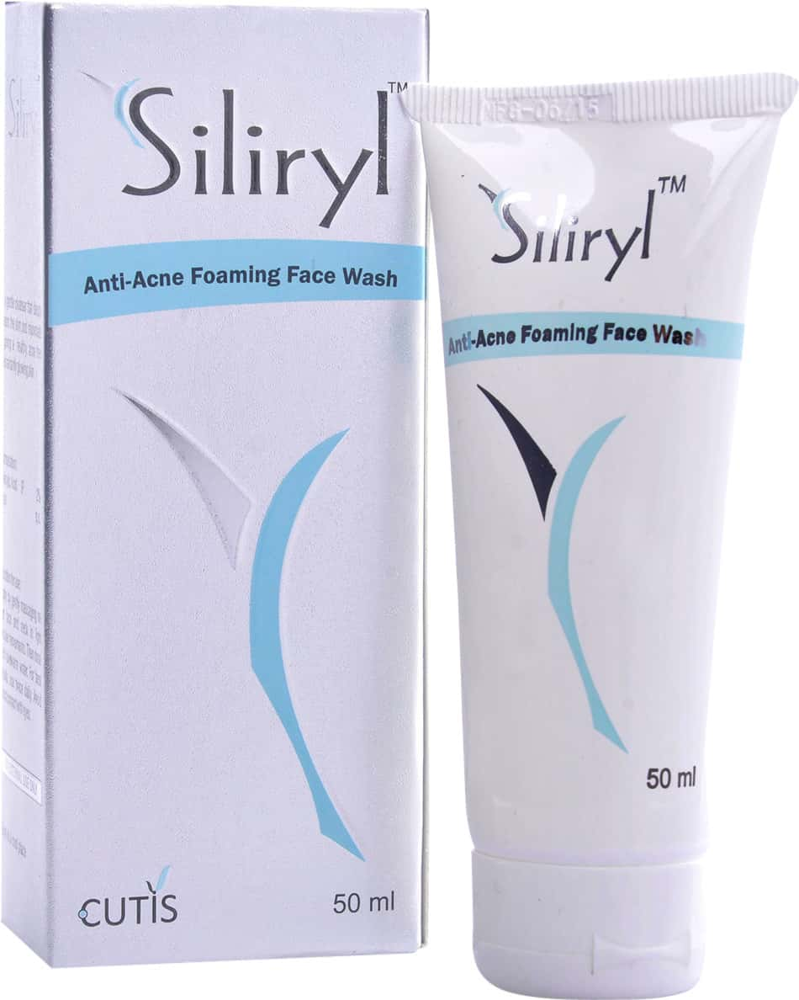

Siliryl Anti Acne Foaming Face Wash
Siliryl Anti-Acne Foaming Face Wash is a gentle yet effective cleanser that helps to fight acne and prevent future breakouts. It contains salicylic acid, which is a beta-hydroxy acid (BHA) that helps to exfoliate the skin and remove dead skin cells. It also contains niacinamide, which is a form of vitamin B3 that helps to soothe and calm the skin.
Benefits of Siliryl Anti Acne Foaming Face Wash
- Fights acne and prevents future breakouts
- Exfoliates the skin and removes dead skin cells
- Soothes and calms the skin
- Suitable for all skin types
How to Use Siliryl Anti Acne Foaming Face Wash
- Wet your face with warm water.
- Apply a small amount of Siliryl Anti-Acne Foaming Face Wash to your hands and massage it into your skin.
- Rinse your face with warm water.
- Pat your face dry with a clean towel.
Ingredients
- Salicylic Acid (2%)
- Niacinamide (4%)
- Glycerin
- Water
- Cocamidopropyl Betaine
- Fragrance
Warnings
- For external use only.
- Avoid contact with eyes.
- If irritation occurs, discontinue use and consult a doctor.
- Keep out of reach of children.
